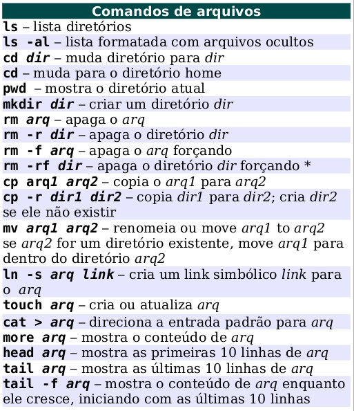
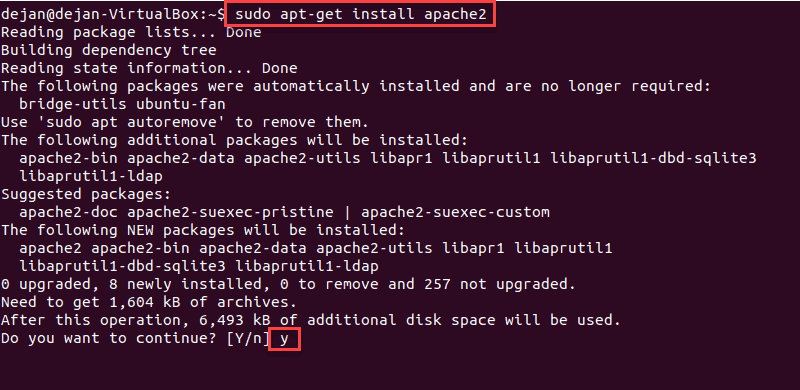

Organização de Pastas
Diferente do Windows a organização é feita por pastas e não por unidade de armazemento.
Para pastas
Abra o prompt do Linux na barra lateral.
- cd - Permite você trocar de pasta, descrevendo o caminho completo. Exemplo:
"cd ~/Documentos/filmes" vai para a pasta "filmes"), ou o nome de uma pasta dentro da atual ("cd filmes" partindo da pasta "Documentos" vai para a pasta "filmes")
- cd / - Vai para a pasta raiz
- md - cria um diretório
- rmdir - Remove uma pasta
("RMDIR filmes" removerá permanentemente a pasta filmes)
- clear - limpa o prompt
- mv - Move uma pasta para outra já existente, ou renomeia uma pasta.
- ("MV filmes midia" moverá a pasta "filmes" para a pasta "mídia", que
já existe. Caso não exista, a pasta "filmes" será renomeada para "mídia")
- "cd .." - muda para a pasta anterior.
- man - Fornece informações de ajuda sobre comandos
- ls - Lista as pastas e arquivos do diretório atual
- ls -l - Lista as pastas e arquivos do diretório atual, em forma de lista, e com mais informações sobre cada pasta e arquivo
- touch - Cria um arquivo. Exemplo:
("TOUCH documento.txt" criará um arquivo de texto chamado "documento" dentro da pasta atual)
- rm - Deleta um arquivo
- cp - Copia um arquivo para outra página
- mv - move ou renomeia um arquivo 
Para Arquivos
Não se esqueça, o Linux é case sensitive, tudo precisa ser escrito corretamente.
Comandos Avançados
- sudo apt update -- atualiza os servidores do sistema
- sudo apt upgrade -- instala atualizações disponíveis de pacotes instalados no sistema
- sudo apt install gcc - linguagem C
- sudo apt install g++ - linguagem C++
- nano test.cpp -- para programar em C++
- g++ test.cpp -o texte.exe -- compila em C++
- ./texte.exe -- executa em C++
- sudo apt install apache2 -- baixa o Apache 
- sudo ufw allow "Apache" -- para habilitar o Apache
- sudo systemctl status Apache2 -- para saber se o serviço tá ativo
Relacionados ao C e o C++
Os comandos mostrados acima são fundamentais antes de baixar qualque programa.

Apache
Confirma com o 'y', nega com o 'n'
Cuidado com este
sudo chmod 777 . -R -- se fizer na raíz dá pau